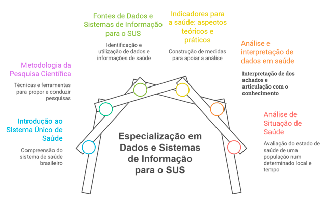

Módulo 1 | Aula 3
Elaborando uma ASIS - 1
Recapitulando os conteúdos
A elaboração de uma Análise de Situação de Saúde (ASIS) não começa somente na escolha dos indicadores ou na construção de tabelas e gráficos. Tal análise exige a articulação de conhecimentos sobre o SUS, metodologia científica, fontes de dados, indicadores, métodos de análise e interpretação da realidade social e sanitária. Antes de iniciarmos o roteiro prático para a elaboração de uma ASIS, vamos recordar as principais contribuições de cada disciplina para seu desenvolvimento
Fonte: Ministério da Saúde;
UFG (2015, p.
11).
Resumo dos principais conceitos apresentados no curso que serão aplicados à ASIS.

Fonte: Elaborada pela autora (2026).
1 - Introdução ao Sistema Único de Saúde (SUS)
- A saúde é reconhecida como direito de todos e dever do Estado, sendo garantida por meio de políticas sociais e econômicas e pelo acesso universal e igualitário às ações e aos serviços de saúde.
- O SUS está organizado segundo princípios como universalidade, integralidade e equidade e diretrizes como descentralização, regionalização, participação social e organização em Redes de Atenção à Saúde.
- A Atenção Primária à Saúde e a Vigilância em Saúde possuem papel estratégico na identificação das necessidades da população e na organização das respostas do sistema de saúde.
- A organização dos serviços, o financiamento, a força de trabalho, as relações entre os diferentes níveis de gestão e a disponibilidade de recursos interferem na capacidade do SUS de responder aos problemas identificados.
Na ASIS, esses conhecimentos ajudam a compreender o contexto institucional no qual os problemas ocorrem e as possibilidades de intervenção dos gestores, profissionais, serviços e demais atores sociais.
2 - Metodologia da Pesquisa Científica
- Uma investigação se inicia com a identificação e a delimitação de um problema ou situação que precisa ser compreendida.
- A pergunta orientadora e os objetivos devem ser claros, coerentes, viáveis e relacionados ao problema selecionado.
- A revisão da literatura ajuda a conhecer o que já foi produzido sobre o tema, a fundamentar a interpretação dos resultados e a propor recomendações.
- A metodologia descreve o caminho adotado, incluindo o tipo de estudo, a população, o território, o período, as fontes de dados, as variáveis, os indicadores e as técnicas de análise.
Uma ASIS consistente parte de um problema bem delimitado e de uma pergunta[Jd2.1] orientadora clara, utilizando metodologia adequada, transparente e reprodutível, dados confiáveis e análise integrada ao contexto político, histórico, social e cultural em diálogo com a literatura existente.
3 - Fontes de dados e Sistemas de Informação para o SUS
- Os dados, informações, indicadores e o conhecimento para interpretá-los representam diferentes etapas do processo de compreensão da realidade. Esses recursos precisam ser organizados, analisados e contextualizados para subsidiar decisões.
- A ASIS pode utilizar dados provenientes de diferentes fontes e sua escolha deve considerar a finalidade, a população coberta, a unidade de registro, a abrangência territorial, a periodicidade, a disponibilidade, a qualidade e as limitações.
- Na disciplina foram identificados diferentes tipos de fontes de informação, como: fontes populacionais, demográficas e socioeconômicas; inquéritos e pesquisas populacionais de saúde, sistemas de estatísticas vitais, sistemas de informação epidemiológica e de vigilância, sistemas administrativos e de produção assistencial, sistemas de Informação da Atenção Primária à Saúde, sistemas de gestão, infraestrutura e capacidade instalada e sistemas orçamentários e financeiros.
Você deverá selecionar as fontes que melhor contribuem para explicar a situação/problema contemplado na ASIS. De acordo com o objetivo, serão necessárias diversas fontes para uma contextualização e análise adequada. Lembre-se de pensar na fonte dos dados populacionais!
4 - Indicadores para a saúde: aspectos teóricos e práticos
- Indicadores são medidas sintéticas utilizadas para representar e acompanhar diferentes dimensões da realidade social, demográfica, epidemiológica e dos serviços de saúde.
- Valores absolutos mostram a magnitude dos eventos, enquanto medidas relativas — como proporções, taxas, razões e índices — permitem relacionar eventos a uma população ou a outras referências.
- A comparação entre populações exige atenção às diferenças de composição demográfica e outras características.
- Um bom indicador deve apresentar atributos como validade, confiabilidade, sensibilidade, especificidade, relevância, mensurabilidade, oportunidade e comparabilidade.
Você deve selecionar, calcular, apresentar e interpretar indicadores coerentes com os objetivos da ASIS, evitando comparações inadequadas e erros de interpretação. Lembre-se do seu objetivo e das perguntas que pretende responder.
5 - Análise e interpretação de dados em saúde
- A estatística transforma dados em informações úteis por meio da análise exploratória e inferencial, permitindo compreender fenômenos, fazer estimativas e apoiar a tomada de decisões em saúde.
- A análise de séries temporais permite identificar tendências, sazonalidade e avaliar o impacto de intervenções em Saúde Pública, contribuindo para previsões e planejamento.
- A análise espacial permite identificar como os eventos de saúde se distribuem no território, revelando padrões geográficos que muitas vezes não são percebidos em análises tradicionais.
A escolha dos métodos de análise de dados a serem utilizados dependerá do seu objetivo e do tipo de dados disponíveis.
6 - Análise de Situação de Saúde
- A ASIS é um instrumento estratégico para identificar problemas, necessidades, desigualdades e prioridades, subsidiando o planejamento, a gestão, a vigilância e a formulação de políticas públicas.
- A situação de saúde de uma população não é explicada apenas pela ocorrência de doenças, uma vez que expressa processos econômicos, políticos, sociais, culturais, ambientais e históricos.
- As populações são heterogêneas; por isso, a análise deve considerar diferenças relacionadas ao território, às condições de vida, à renda, ao trabalho, ao sexo e gênero, à raça e cor, à idade e a outros marcadores sociais.
- Os problemas representam discrepâncias entre a realidade observada e uma situação considerada desejável, as necessidades correspondem às condições necessárias para viver com saúde e os determinantes ajudam a explicar por que os problemas e as desigualdades ocorrem.
- A ASIS deve combinar dados quantitativos, informações qualitativas, conhecimentos produzidos pelos serviços e a participação dos diferentes atores do território.
Uma boa ASIS deve articular as informações apresentadas, explicar a situação encontrada e transformar os resultados em conhecimento para apoiar a definição de prioridades, a alocação de recursos, o monitoramento das intervenções e o planejamento da avaliação das respostas produzidas pelo SUS.